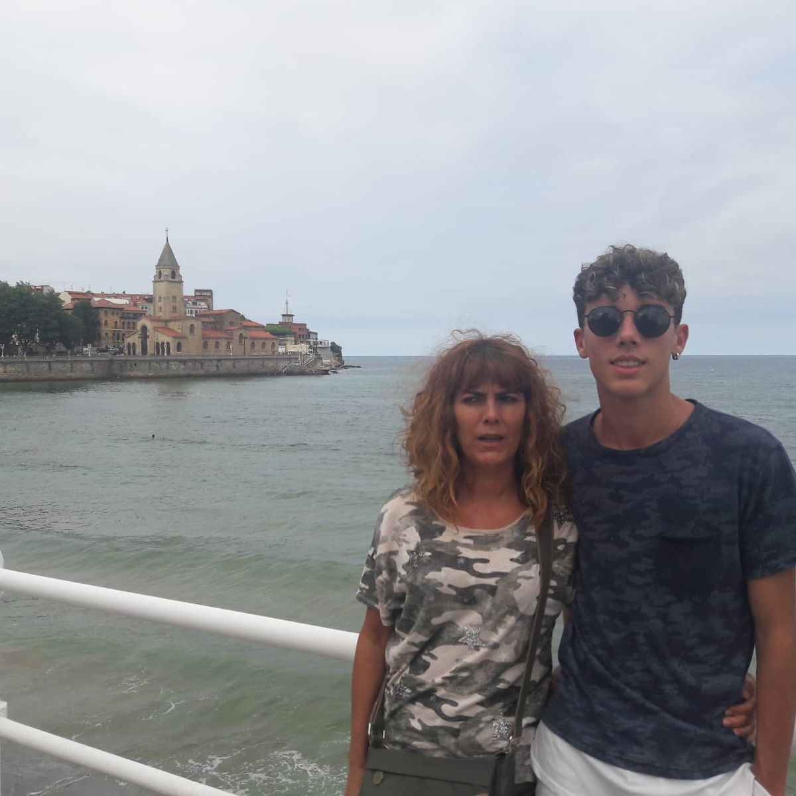

Sobre Mi
Mi nombre es Óscar Maté Gutiérrez y actualmente soy alumno de segundo de ASIR en el centro Salesianos Don Bosco en Villamuriel de Cerrato.
Nací en Palencia en el año 1999 y actualmente vivo en Venta de Baños.
Una de mis pasiones es la informática, por lo cual estudio ASIR. Me gustaria acabar trabajando en algo que tenga que ver con la informatica,
en mi caso, actualmente una de mis cosas favoritas de la informática es la ciberseguridad, pero también me gusta el mundo de la gestión de las bases de datos y diseñar paginas web.
Algunas de mi otras pasiones es la música de la cual me encanta estar escuchando música cuando puedo, y tambien me gustaria algun dia
saber como hacer canciones con programas como FL Studio.
También me gusta el futbol y actualmente soy jugador del CD Castilla Dueñas.